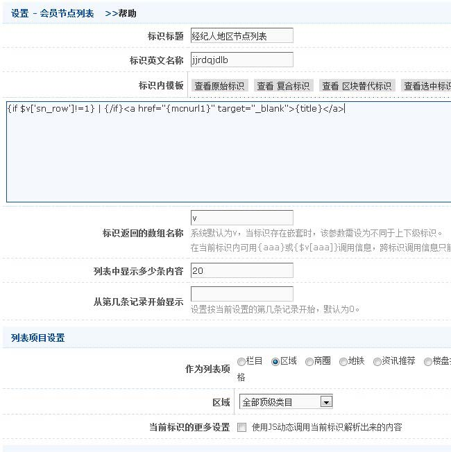

示例1
效果:
html代码:
<a href="#" target="_blank">地区</a> | <a href="#" target="_blank">地区</a> | <a href="#"
target="_blank">地区</a>
标识模板(template)代码:
{if $v['sn_row']!=1} | {/if}<a href="{mcnurl1}" target="_blank">{title}</a>
说明
本例中目的是搜索某个区域的经纪人，需要区域和经纪人的交叉结点，故使用会员结点列表
整体截图如下
